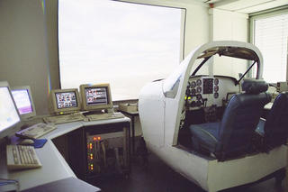

FGFS Based Projects
One of the primary goals of FlightGear is to have an open architecture
so it can be used as a platform for a variety of projects. This page
contains information on some of the various projects that have
utilized FlightGear in one way or another.
RWTH Aachen research simulator

The Institute of Aerospace Engineering at the RWTH Aachen is using
FlightGear to drive the cockpit and the visuals of a general aviation
simulator for training and research purpose. Micro Air Vehicles are
being implemented by MATLAB/Simulink flight dynamics models; all
I/O-related tasks, be they required by FDM, controls or instruments,
are connected over network, using FlighGear native interfaces.
Additional info
and
pictures.
Phil Cobbin's Synthetic Vision Project
 Phil Cobbin is developing an open source synthetic vision system
largely based on FlightGear. He has created code to build 3d (translucent)
representation of all the FAA airspace boundaries.
Phil Cobbin is developing an open source synthetic vision system
largely based on FlightGear. He has created code to build 3d (translucent)
representation of all the FAA airspace boundaries.
Pictures and additional info.
OV-10 Bronco Association Museum Simulator Project
 Dave Culp, a former USAF Bronco pilot, constructed a FlightGear-based
OV-10 Bronco flight simulator for the OV-10 Bronco Association at Meacham
Field, Fort Worth Texas.
Dave Culp, a former USAF Bronco pilot, constructed a FlightGear-based
OV-10 Bronco flight simulator for the OV-10 Bronco Association at Meacham
Field, Fort Worth Texas.
Pictures and additional info.
John Wojnaroski's 747 Cockpit Project
 John Wojnaroski is building a 747 cockpit based on FlightGear and
OpenGC. He is developing his own hardware for some of the
functionality and interfacing.
John Wojnaroski is building a 747 cockpit based on FlightGear and
OpenGC. He is developing his own hardware for some of the
functionality and interfacing.
Pictures and additional info.
Gene Buckle's F-15C Eagle Flight Simulator
Gene Buckle is working on building his own lifesize flight sim out of
an old airplane fuselage. He hopes to drive the display and
instruments with Flight Gear.
Pictures and additional info.
University of Illinois at Urbana Champaign
FlightGear is providing a platform for icing research for the Smart
Icing Systems Project.
More info.
Simon Fraser University, British Columbia Canada
Portions of FlightGear were used in simulation to develop the needed
control algorithms for an autonomous aerial vehicle.
More info.
Iowa State University
A senior project intended to retrofit some older sim hardware with
FlightGear based software.
More info.
University of Minnesota - Human Factors Research Lab
FlightGear brings new life to an old Agwagon single seat, single
engine simulator.
More info.
Ray Woodworth's Flight Simulator Motion Chair
FlightGear provides real-time pitch, roll, and yaw data to
realistically control this motion chair.
More info.
A picture of the
chair in action at Linux World Expo (3rd pic down.)
Aeronautical Development Agency, Bangalore India
FlightGear is used as as the image generator for a flight simulation
facility for piloted evaluation of ski-jump launch and arrested
recovery of a fighter aircraft from an aircraft carrier.
More information
Veridian Engineering Division, Buffalo, NY
FlightGear is used for the scenery and out-the-window view for the
Genesis 3000 flight simulator.
For information contact: Paul Deppe (716) 631-6898 or Bill Otto (716)
631-6729
More detailed information
The Aberystwyth Lighter Than Air Intelligent Robot (ALTAIR)
The Intelligent Robotics Group at the University of Wales, Aberystwyth, UK
is using FlightGear as part of their aerobot research to design aerial
vehicles that can operate in the atmosphere of other planets.
More information.
University of Tennessee at Chattanooga
FlightGear is being used as the basic framework to provide the UTC
Challenger Center (and hopefully other centers in the future) a low
cost virtual reality computer simulation. Our simulation is using
flightgear and JSBSim, specifically the shuttle module, to develop a
shuttle landing simulator. Currently, we are trying to get to the
point of at least contributing instructions on how to interface our
virtual reality hardware with Flightgear back to the OS community.
More info.
ARINC
Todd Moyer of ARINC is using FlightGear as part of an effort to test
and evaluate Flight Management Computer avionics and the corresponding
ground systems.
Certain capabilities of the Flight Management Computer are only
available when airborne, which is determined by the FMC according to
data it receives from GPS and INS sensors. We have written additional
software that translates the NMEA output of FlightGear (including
latitude, longitude, and altitude) into the ARINC 429 data words used
by GPS and INS sensors. These data words are then fed to the Flight
Management Computer. The position information from FlightGear is
realistic enough to convince the FMC that it is actually airborne, and
allows us to test entire "flights" with the avionics.
More info.
MSimulation
Marcus Bauer and others are working on a simulator cockpit environment
and are using FlightGear as the software engine. They are building a
real Cockpit, including three cockpit computers and are using
Flightgear as their flightsimulation platform. The cockpit panels,
systems and logics are done like Airbus does today.
More info.
|